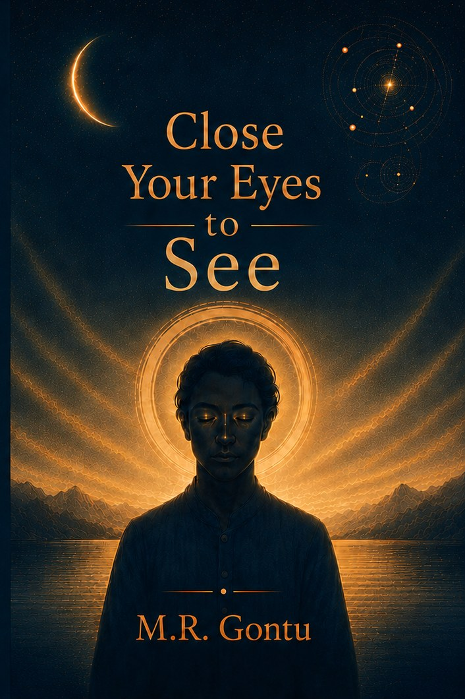

The Book

Close Your Eyes to See
What If the Past Was Never Silent?
Some symbols outlast the civilizations that made them. India's temples are covered in them — stone sanctums, silent figures, flowing water, mountains, serpents, wheels of cosmic time — cut with enormous care by people who seem to have expected someone, eventually, to read them.
Close Your Eyes to See asks what they were for. Not as a puzzle to be cracked, but as a question worth living with: how does a civilization hand down what it knows, when every generation it depends on is fragile? Books burn. Languages die. Stone keeps its appointment.
Because perhaps the stones were never silent. Perhaps we simply forgot how to listen.
It doesn't hand down conclusions. It invites you to look again at the things you were sure you'd already understood — and to notice how much goes unseen, not because it was ever hidden, but because no one slowed down long enough to look.
Inside the Book
Memory in Stone
Temple architecture and iconography read as a deliberate medium of preservation — knowledge carried not in books, but in form, proportion, and symbol.
The Fragility of Knowledge
What happens when a civilization loses what it once knew — and why every era stands one interruption away from forgetting.
Learning to Look Again
The past approached not as a silent ruin, but as a message that has been waiting, patiently, for a reader.
Where to Buy
Close Your Eyes to See is available worldwide through Amazon. Choose your country's store below for local pricing and delivery. Print editions ship in most markets; where the available editions differ, the store is marked.